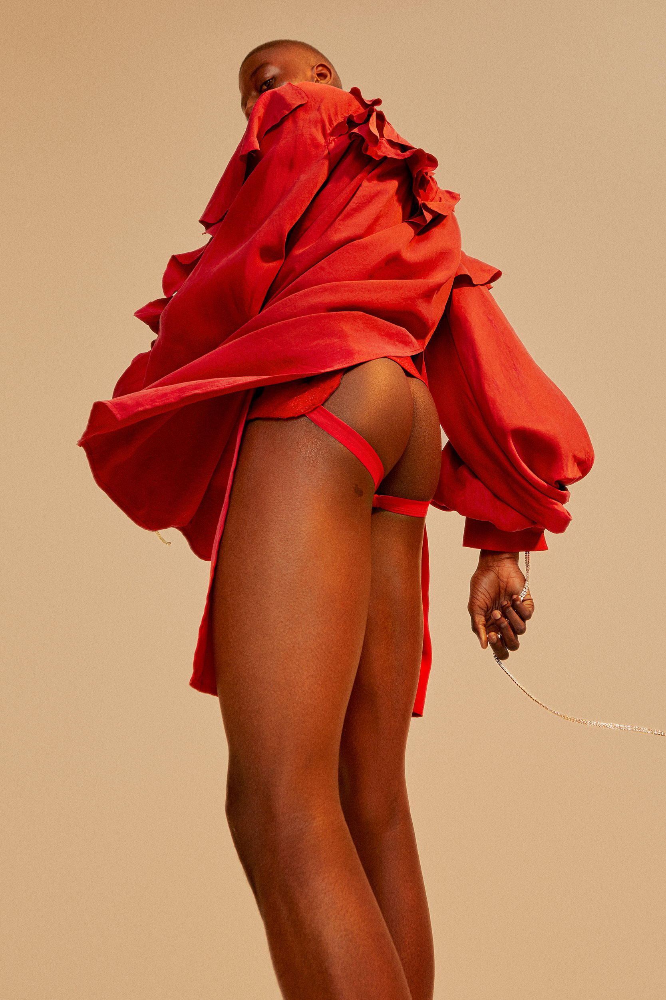
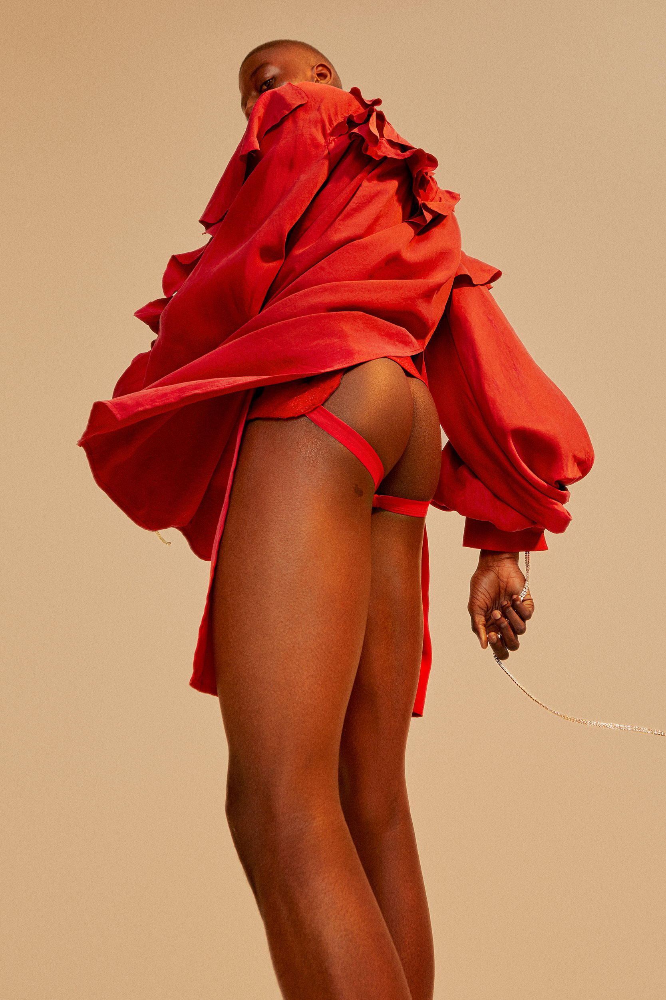
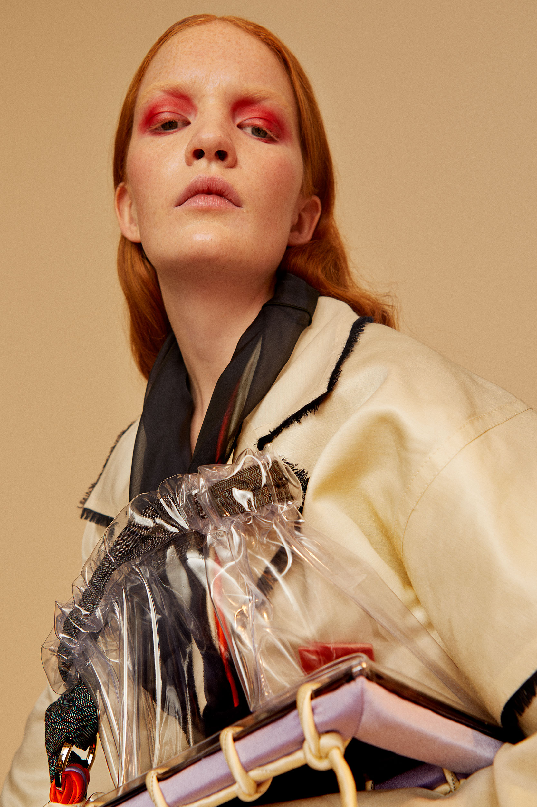
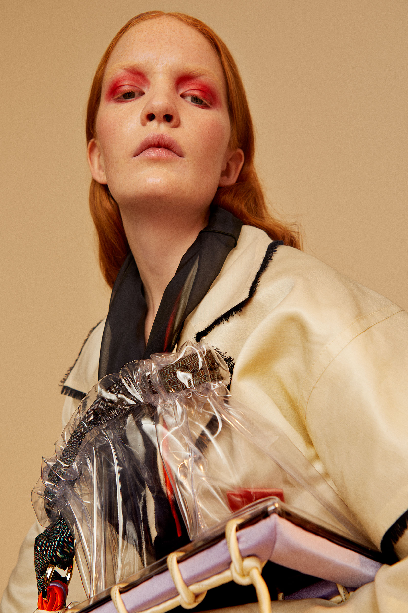

Designer: Sissel Kärneskog
Project for 5 fashion designers (both students and alumni) from Beckmans College of Design, fashion programme exposing in Paris during fashion week. Fashion Show at the Institut Suedois, and show room at 0fr galerie, libraire. Together with Agnes Vannerus Lindblom we art directed a photo shoot, created a catalogue, and invitations.
 
Designer: Alecsander Rothschild

Designer: Amanda Bogfors Mészaros
 

Art Director: Me & Agnes Vannerus Lindblom
Photography: Cornelia Wahlberg, represented by Adamsky
Make & Hair: Johanna Nomiey
Styling: Aiste Suliokaite
Models: Johanna F, Stockholmsgruppen & Marlon S, Le Management
Retouch: Adamsky Division